Целью данной работы является приобретение навыков настройки сервера NFS для удалённого доступа к ресурсам.
На сервере установим необходимое программное обеспечение nfs-utils (рис. @fig-1):
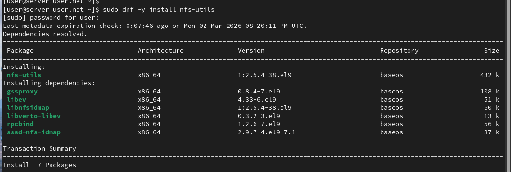
На сервере создадим каталог, который предполагается сделать доступным всем пользователям сети (корень дерева NFS) (рис. @fig-2):
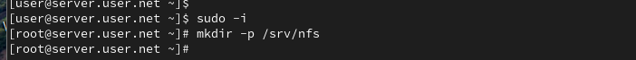
В файле /etc/exports пропишем подключаемый через NFS общий каталог с доступом только на чтение (рис. @fig-3):
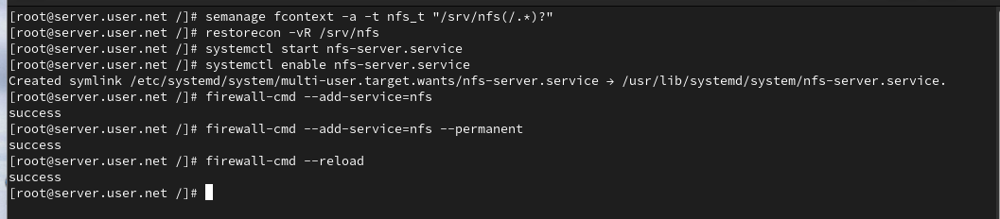
Для общего каталога зададим контекст безопасности NFS, применим изменённую настройку SELinux, запустим сервер NFS и настроим межсетевой экран (рис. @fig-4):
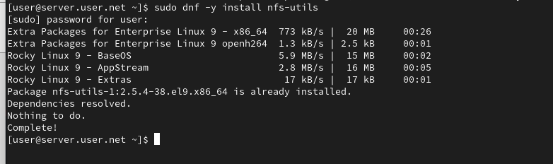
На клиенте установим необходимое для работы NFS программное обеспечение (рис. @fig-5):
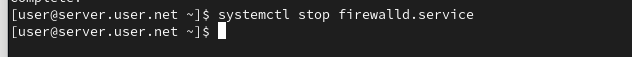
На клиенте попробуем посмотреть имеющиеся подмонтированные удалённые ресурсы (рис. @fig-6):
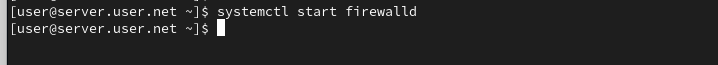
Попробуем на сервере остановить сервис межсетевого экрана (рис. @fig-7):
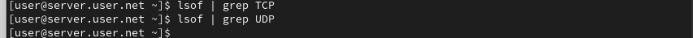
На сервере запустим сервис межсетевого экрана (рис. @fig-8):
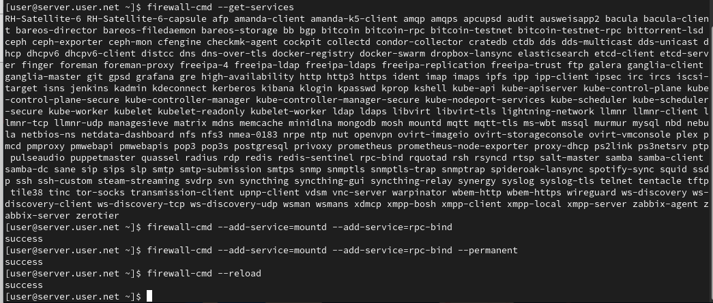
На сервере посмотрим, какие службы задействованы при удалённом монтировании (TCP и UDP) (рис. @fig-9, @fig-10):
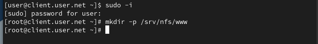
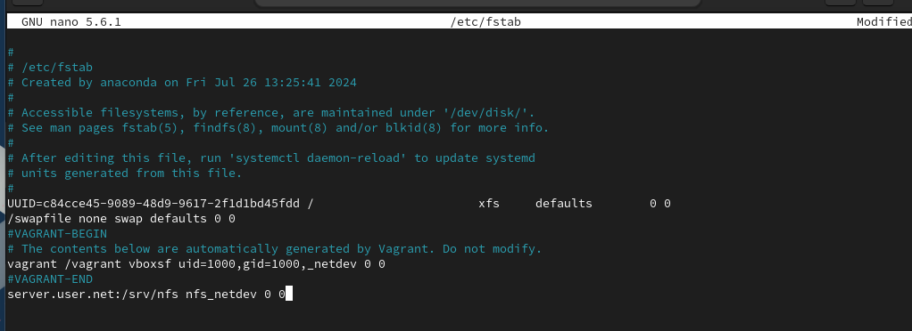
Добавим службы rpc-bind и mountd в настройки межсетевого экрана на сервере (рис. @fig-11):
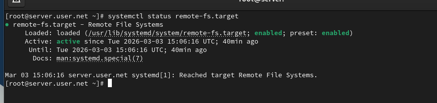
На клиенте создадим каталог для монтирования удалённого ресурса и подмонтируем дерево NFS. Проверим, что общий ресурс подключён правильно (рис. @fig-12):
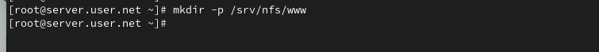
На клиенте в конце файла /etc/fstab добавим запись для автоматического монтирования NFS при загрузке (рис. @fig-13):
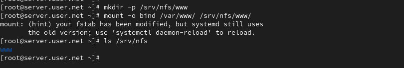
На клиенте проверим наличие автоматического монтирования удалённых ресурсов при запуске системы (рис. @fig-14):
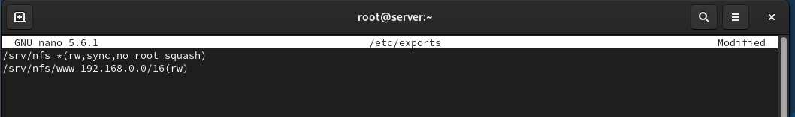
На сервере создадим общий каталог, в который затем будет подмонтирован каталог с контентом веб-сервера (рис. @fig-15):
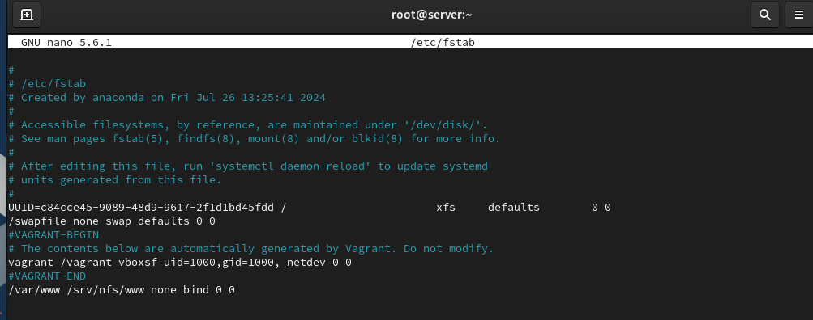
Подмонтируем каталог веб-сервера и проверим содержимое каталога /srv/nfs (рис. @fig-16):
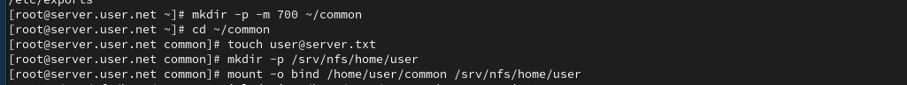
На сервере в файле /etc/exports добавим экспорт каталога веб-сервера с удалённого ресурса (рис. @fig-17):
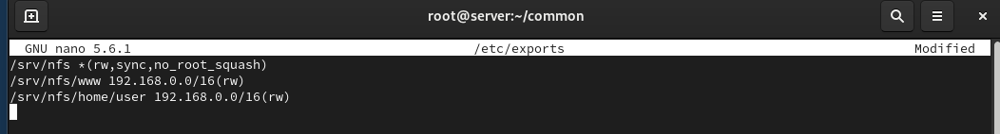
На сервере в конце файла /etc/fstab добавим запись для автоматического монтирования веб-каталога (рис. @fig-18):
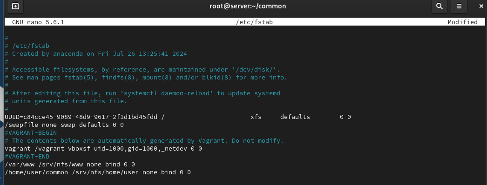
На сервере под пользователем user создадим каталог common и файл user@server.txt. Подмонтируем его в NFS (рис. @fig-19):
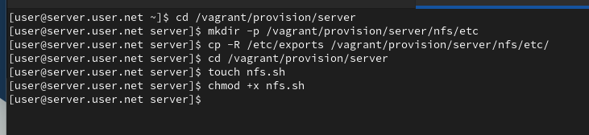
Подключим каталог пользователя в файле /etc/exports (рис. @fig-20):
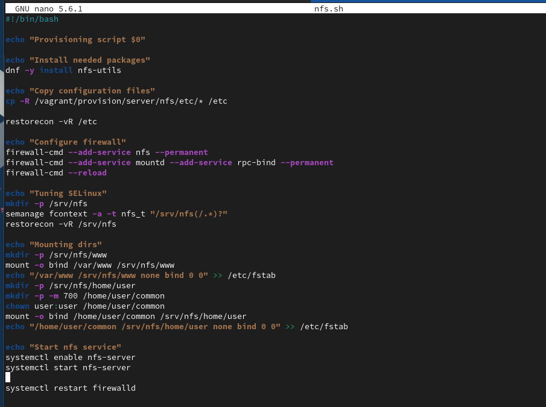
Внесём изменения в файл /etc/fstab для автоматического монтирования пользовательского каталога (рис. @fig-21):
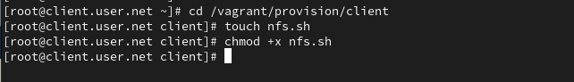
На клиенте под пользователем user попробуем создать файл в подмонтированном каталоге (рис. @fig-22):
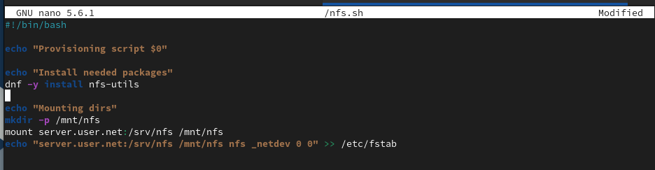
В ходе выполнения лабораторной работы были приобретены навыки настройки сервера NFS для удалённого доступа к ресурсам.
Как называется файл конфигурации, содержащий общие
ресурсы NFS?
Файл конфигурации, содержащий общие ресурсы NFS, называется
/etc/exports. В этом файле определяются каталоги, которые
будут доступны для общего использования через NFS.
Какие порты должны быть открыты в брандмауэре, чтобы
обеспечить полный доступ к серверу NFS?
Для обеспечения полного доступа к серверу NFS, обычно открываются
следующие порты:
Какую опцию следует использовать в /etc/fstab, чтобы
убедиться, что общие ресурсы NFS могут быть установлены автоматически
при перезагрузке?
Для автоматической установки общих ресурсов NFS при загрузке системы, в
файле /etc/fstab следует использовать опцию auto. Пример
строки: